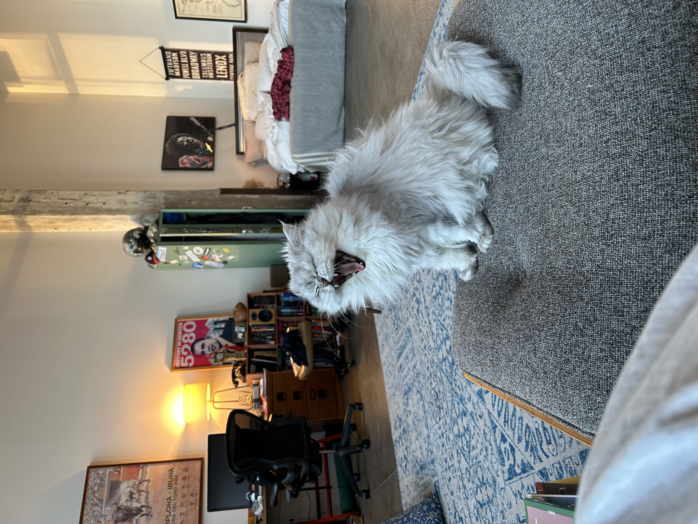
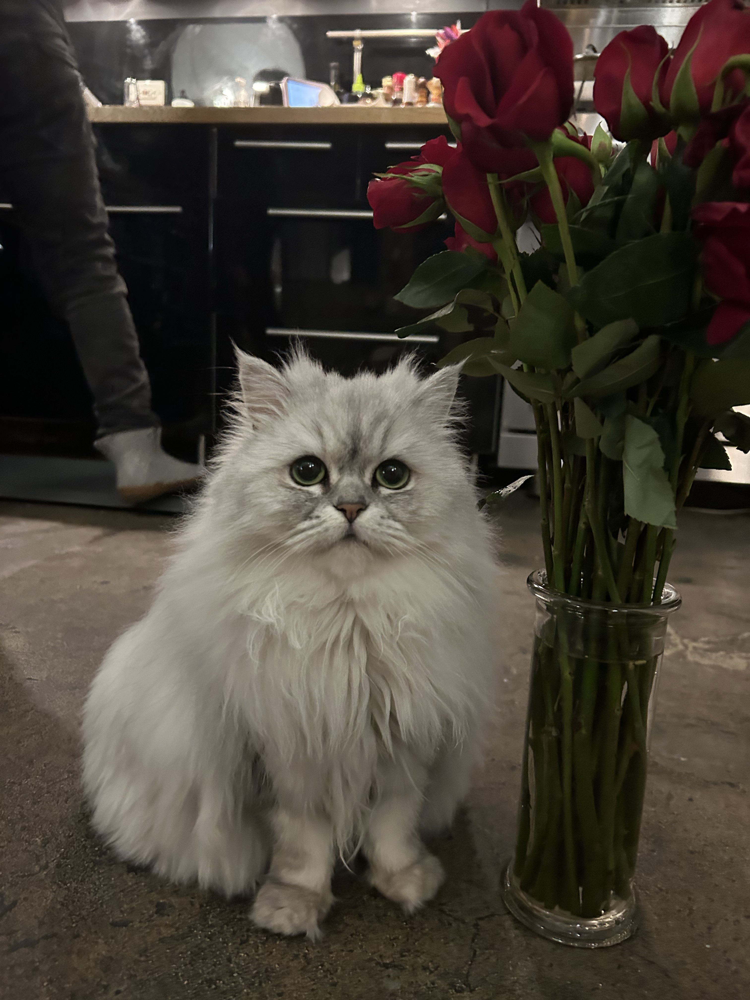

Seulgi Jung 정슬기
Hello! My name is Seulgi, I'm a data journalist from Seoul, South Korea. I use data and graphics to tell stories about complex, often misunderstood issues in our society. I got started writing community dispatches, authoring realtime updates on public health protocols. I'm currently living in New York City and studying at Columbia University's Graduate program in Data Journalism, graduating in summer 2026.
Contact: seulgi.jung1109@gmail.com


This is my cat, Kkong. She's my data purr-fection advisor.